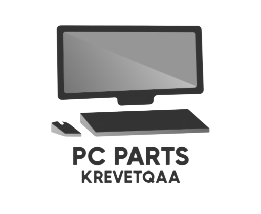
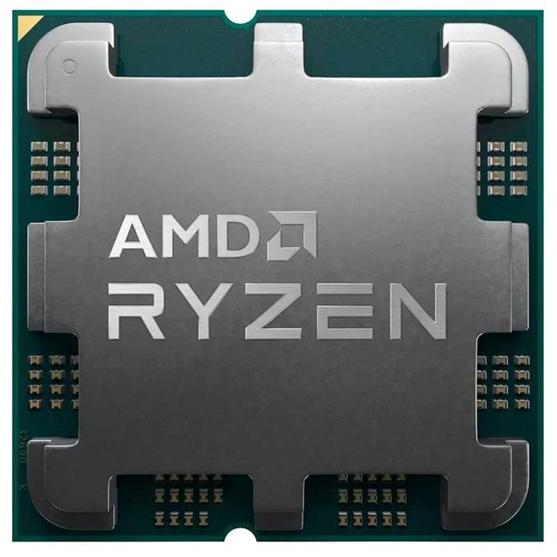
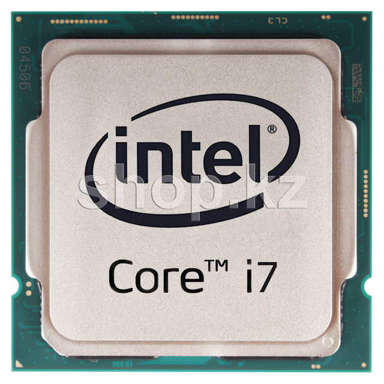
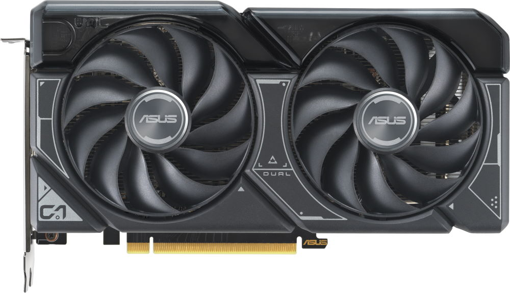

<
Krevetqaa's Shop


Материнская плата - это один из главных элементов в компьютере, как сердце человека.
Именно с помощью ей мы можем подключить комплектующие для ПК такие как процессор, оперативная память, накопители, видеокарта
Материнская плата делится на 4 размера: Mini-ITX, Micro-ATX, ATX, E-ATX. Я перечислил начиная с самой маленькой материнской платы

Процессор - это тоже один из главных элементов в компьютере, как мозг человека.
На этой картинке вы видите процессор от компании AMD. Всего компании которые выпускают процессоры для компьютеров 2. Это Intel и Amd
Есть несколько серии процессоров AMD, это: Ryzen 3,5,7,9. Чем выше, тем мощнее. Без процессора не будет работать пк или ноутбук

А вот это процессор Intel. У Intel тоже есть серии, это: Core i3,5,7,9. По той же самой логике чем выше, тем мощнее.
По сути оба процессора хороши, но многие выбирают Intel, так как AMD нагревается намного сильнее

Оперативная память - это тоже один из главных элементов в компьютере.
Оперативная память или же сокращенно оперативка делятся на 5 видов, это: DDR1,2,3,4,5. Самые распространненые виды это DDR4 и DDR5.
Без него тоже не будет работать пк или ноутбук. У оперативной частоты тоже есть своя мощность которая определяется в МГц.
Самая распростроненная среди DDR4 это 3200 МГц, а самая распростроненная среди DDR5 это 6400 МГц


SSD (Solid State Drive) - устройство хранения данных, заменяющее механические жесткие диски.
Существуют форматы 2.5" (стандартный) и M.2 (более компактный). 2.5" использует SATA, устанавливается как обычный жесткий диск.
M.2 компактен, использует PCIe 4.0 x4 или NVMe для более высокой производительности.
Выбор зависит от потребностей, M.2 подходит для более современных и тонких устройств.

Видеокарты – это устройства, отвечающие за обработку и вывод графики на монитор. Они устанавливаются в компьютеры и игровые системы, обеспечивая высококачественное изображение и плавность отображения. Некоторые видеокарты оснащаются системой охлаждения, включая от 1 до 3 вентиляторов, чтобы предотвратить перегрев и обеспечить стабильную работу.